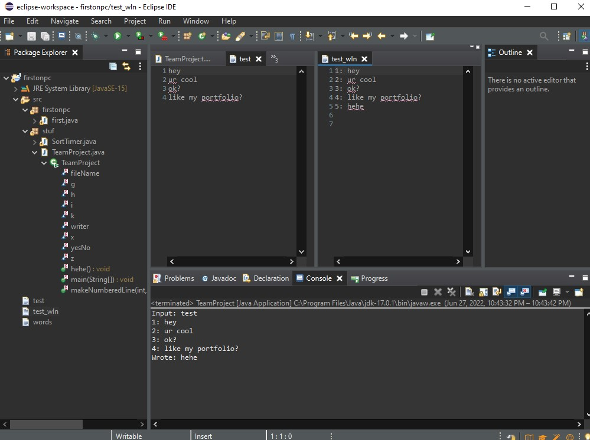

Automated file reader and writer
This project reads a given file, then print it to a different file, while writing anything
else you would like to add to the file, and has quite a bit of automation potential.

This program was made 1-2 semesters ago, and has a lot of potential for improvement, you can add check for certain words you dont want in the new file, sort for things like names and dates, etc. See output below.

// Program created for CS by Kearnan Bishop and Nhi T Vong
package stuf;
import java.io.FileWriter;
import java.io.IOException;
import java.io.PrintWriter;
import java.io.BufferedReader;
import java.io.FileReader;
import javax.swing.JOptionPane;
public class TeamProject {
static String fileName;
static int i = 1;
static int x = 0;
static int z = 0;
static int h = 0;
static int g = 0;
static String yesNo;
static String k;
static PrintWriter writer;
// calls the method
public static void main(String[] args) throws IOException {
// i found this file write and read version from Coding With John on Youtube, link to video: https://www.youtube.com/watch?v=ScUJx4aWRi0
fileName = JOptionPane.showInputDialog("enter the file name.");
if (fileName.contains(".txt")) {
System.out.println("FileNames cannot contain .txt, you either accidentally put the entire file with .txt at the end. "
+ "\nor you named your file with .txt in it, in which case you should rename it.");
return;
}
System.out.println("Input: " + fileName);
BufferedReader reader = new BufferedReader(new FileReader(fileName ));
writer = new PrintWriter(new FileWriter(fileName + "_wln"));
String line;
while ((line = reader.readLine()) != null) {
System.out.println(makeNumberedLine(i, line));
writer.print(makeNumberedLine(i, line) + "\n");
i++;
}
reader.close();
//figure out if they want to write something in the code
k = JOptionPane.showInputDialog("Do you want to write something to the new file. Type yes or no.");
// i did 1 for yes and 2 for no, because i was running into a problem where an if statement said k did not equal Yes, however when i printed it, it did.
hehe();
}
// method that checks if the filename doesn't have .txt in it, if so it tries to read it, then prints it to a new file
public static String makeNumberedLine(int r, String l ) {
String p = r + ": " + l;
return p;
}
public static void hehe() {
if (k.toLowerCase().contains("yes")) {
while (x==0) {
String text = JOptionPane.showInputDialog("What would you like to write:");
writer.println(makeNumberedLine(i, text) + "\n");
System.out.println("Wrote: " + text);;
String more = JOptionPane.showInputDialog("Would you like to continue writing? Answer with 1 for yes, 2 for no.");
if (more.toLowerCase().contains("no")) {
writer.close();
return;
}
i++;
}
}
else if (k.toLowerCase().contains("no")) {
writer.close();
return;
}
else {
System.out.println("You failed, go again.");
}
}
}